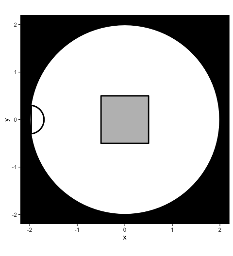
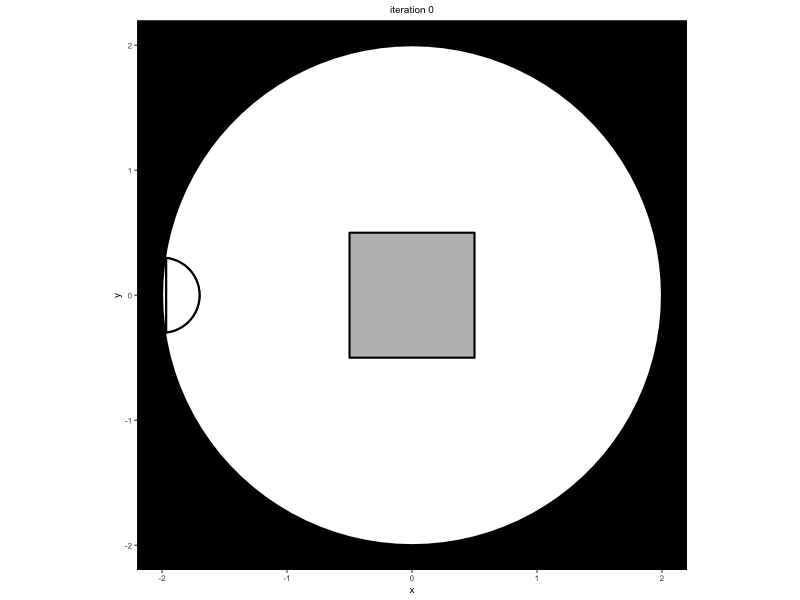

This project serves as a tool to simulate pedestrian movement using the Minds for Mobile Agents (M4MA) model. This package enables users to simulate from the model and estimate the parameters of the model on movement data, each tailored to their own setting of choice.
Background
Pedestrian models are popular tools to investigate how people navigate the complex world that we live in. Yet, most current models assume that pedestrians are all one and the same, making them solely applicable to study movement behavior in high-density situations like festivals or sporting events, but less so in low-density situations like supermarkets and train stations.
To capture movement behavior in both low- and high-density situations, Andrew Heathcote and Dora Matzke recently proposed the M4MA, proposing that pedestrian behavior is determined on three levels:
- Strategic level: Consists of what the agent want to achieve and how they will navigate the space;
- Tactical level: Consists of reacting to the environment and making tactical decisions regarding navigation in case of blockages;
- Operational level: Consists of the moment-to-moment step decisions the agent takes, encompassing changes in direction and/or speed at the lowest level.
Critically, M4MAs pedestrians have a particular “personality” reflected in unique parameters that guide the movement on the operational level. These individual differences are implemented in two ways:
-
Qualitative differences: Each pedestrian belongs to a particular class of people, defining a particular pedestrian profile that one may encounter within the setting of interest;
- Quantitative differences: Within each class, parameter values are subject to random variation, assigning each pedestrian with a unique combination of parameters.
Installation
One can install predped via the remotes package:
remotes::install_github("ndpvh/predped")To use the package, one should load it through library:
Getting started
To simulate data from the M4MA, predped requires the following workflow.
First, one should define the environment in which the pedestrians will walk around, defined through the background class. This S4 class defines the shape of the environment, , the objects that are contained in it, and a set of entrances and/or exits. The shape and objects are furthermore restricted to be instances of the object class, that is they should be either a rectangle, polygon, or circle.
A simple example of an environment is the following circular room with a square object placed in the middle:
setting <- background(
shape = circle(
center = c(0, 0),
radius = 2
),
objects = list(
rectangle(
center = c(0, 0),
size = c(1, 1)
)
),
entrance = c(-2, 0)
)It is good practice to visualize what the environment looks like. For this, we can use the plot function:
plot(setting)
#> Loading required namespace: ggplot2
Once an environment has been defined, on should link this environment with the characteristics of the agents who are expected to walk around in this environment. This is achieved through defining an instance of the predped class, this time defining the setting or environment, the archetypes of the agents expected to walk in it, and the weights or probability with which one expects each archetype to be found within the space.
Agent characteristics are defined through a data.frame that contains parameter values for a given “class” of people. One such dataframe is provided by us in archetypes.csv and can be called in the package through the variable params_from_csv or through calling the function load_parameters(). In this example, we wish to use the "BaselineEuropean", specifying the model as:
model <- predped(
id = "my model",
setting = setting,
archetypes = "BaselineEuropean"
)Once the setting and predped model have been defined, one can simulate pedestrian movement as expected by the M4MA through calling the function simulate:
The variable trace consists of a list of states of the environment, each state itself consisting of a copy of the environment (under slot setting) and of a list of pedestrians walking around in the environment (under slot agents). To visualize this trace, one can again use the plot function:
plots <- plot(
trace,
print_progress = FALSE
)The plot outputs a list of plots. For research purposes, it is useful to transform this list to a gif, which can be achieved by using the gifski package:
#> [1] "/Users/nielsvanhasbroeck/Documents/UvA/Projects/Software, Pedestrian Modeling/man/figures/readme.gif"Looking at the created .gif then gives us an idea of how the agents walked around in the room:

Getting help
You can find the documentation for this package on its dedicated documentation site. For an overview of the logic within the package, we refer the interested reader to the Getting Started page on this site. On this site, we furthermore include information on the theoretical background, on running minimal and advanced simulations, and on estimating the model on data.
If you encounter a bug, you can report the bug with a minimal working example as an Issue.
Contribute
If you otherwise wish to contribute to this project, feel free to reach out to Niels Vanhasbroeck (niels.vanhasbroeck@gmail.com) and Andrew Heathcote (ajheathcote@gmail.com).
Credits
The development of this package would not have been possible without the help of its many contributors. For the development of the m4ma package, we thank (in alphabetical order):
For the creation of the predped, we thank its permanent project members (in alphabetical order):
as well as those who worked with us temporarily (in alphabetical order):
See also
For more information on the project, please see its dedicated section on the lab website: https://www.ampl-psych.com/projects/minds-for-mobile-agents/.